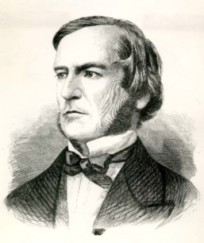

George Boole

George Boole was a man who was born and lived in 19th century Lincoln, United Kingdom. He is most prodominatly known for having created the Boolean logic system
which utelises a series of gates
to determine binary code when used in sequence of other gates, and in turn can store one bit (or one piece of binary). This stystem of logic being an advancement on Aristotelean logic.
Boolean logic is used in almost every device on the planet, computers, phones, gaming consoles, most everything relies on the system of Boolean logic and Gates